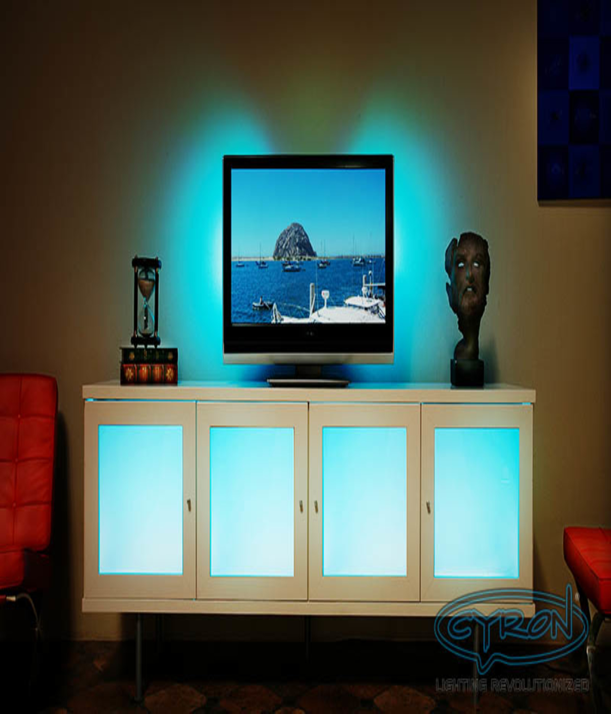
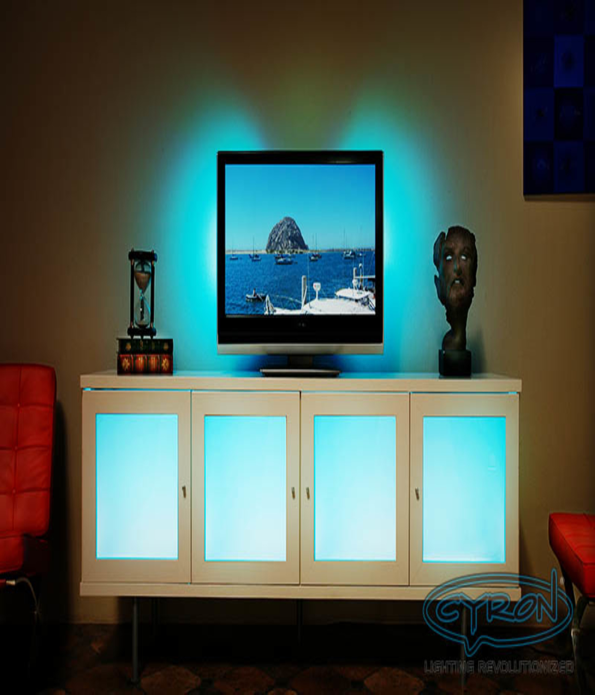
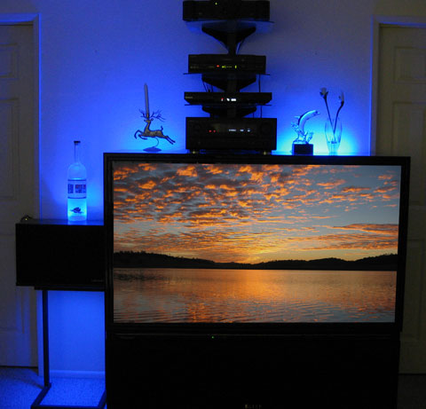
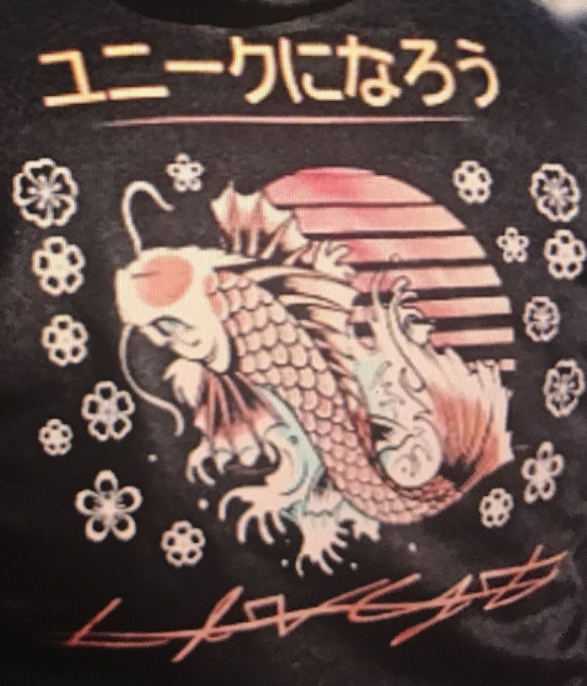
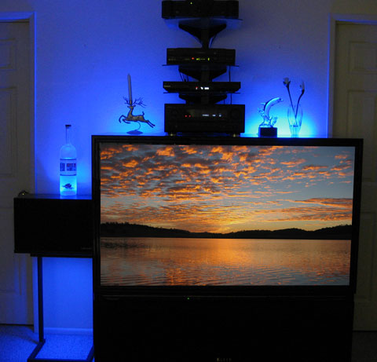
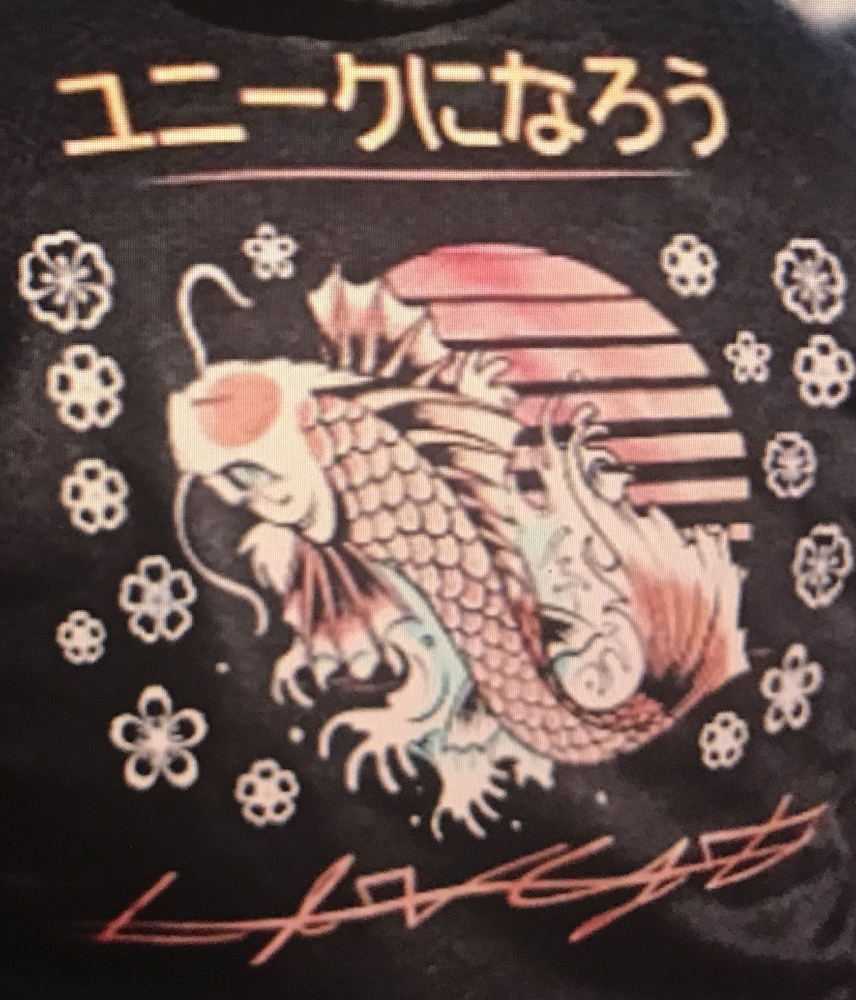

Cyrus Javadi
I am a student currently attending The University of California Riverside, pursuing a bachelors degree in business administaration with an eventual transfer into a business law school. I am a dedicated and extremely hard working student, with an overall GPA of a 3.93. Some of my hobbies include snowboarding, wakeboarding and gaming on my PS4. I am a huge gym freak, as in my opinion, fitness is the key to health and happiness. I have made a major body transformation over the past year, losing over 70 pounds. I show pride with my newfound body as it is a resemblance of my resistance to ever giving up. I was faced with several challenges upon trying to lose weight, adapting to extremely difficult eating habits and having to work out seven days a week to name a few, but I succeeded in the end despite these obstacles.
I have had several years of previous job experience in the business world, however, none in the field of law. I worked as a marketing director for a LED Lighting Company by the name of Cyron Incorporated for nearly three years, being tasked with videography projects, website development, product management or creation, and most importantly, marketing to suppliers such as Amazon, Home Depot, Lowes, and Sams Club. Dealing with huge firms such as the ones mentioned proved to be a severe challenge, as large businesses tend to only care about what will make them the most money, ready to stop giving business to whoever, whenever. It proved a great learning experience to me, as it taught me the challenges and struggles that businesses are often faced with. After leaving my job at Cyron Incorporated to focus on school, I ended up getting into the clothing business, eventually creating my own brand. Although small, the company proved successful as it had made over ten thousand dollars in net profit in only three months of existing. These experiences helped me find my love for business law.
I hope to one day be able to work for a successful business law firm or if possible get hired as a personal lawyer for a business, to help them succeed in all aspects of business and prevent major losses. In order to do this, I have applied for several internships, for companies such as Amazon, Warner Bros., Liberty Mutual Insurance, and several other companies, to furthur expand my knowledge on the business world, and potentially introduce myself into law. I am constantly reminded how challenging law school ca be, and how many lawyers end up dropping out of their field of study due to the difficulty and dreadfulness of the subject. So, in order to prevent any struggle or change of mind, I have started planning visits to courthouses, to watch lawyers do what they do best, debate. I want to prepare myself for the potential cases and people that may come, along with being able to speak to other business lawyers and make new connections that could prove useful at a later time.
Experience
Marketing Director
• Created and edited products for Cyron Incorporated
• Videoography and photography
• Collaborations and orders with Amazon, Home Depot, Lowes, and Sams Club
Cashier
• Creating custom T-Shirt designs with Adobe Photoshop and Illustrator
• Sales and website development
Soccer Referee
• Referee'd nine to ten year olds soccer games
• Adressed and dealt with parents issues and concerns
Education
University of California Riverside
Portfolio
 



 